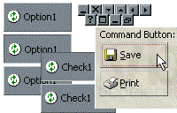

VB5 OwnerDraw Buttons (34K)
VB5 OwnerDraw Buttons (34K)
 VB6 OwnerDraw Buttons (32K)
VB6 OwnerDraw Buttons (32K)
 27 Jan 1999
27 Jan 1999
First Posted
 Subclassing Without The Crashes
Subclassing Without The Crashes

Drawing Buttons, Option Boxes and Check Boxes In Your Own Style
Subclass the standard VB Buttons to draw anything on their surface.
If you set the Style property for VB's CommandButton, OptionBox or CheckBox controls to Graphical, VB turns the control into an Owner-Draw control. By default VB allows you to associate three pictures with these controls. However, if you've ever tried this you will know that the button draws like a turd when you set these properties.
The code with this sample shows you how to intercept the WM_DRAWITEM messages an Owner-Draw button sends to its parent whenever it is about to draw itself and replace VB's implementation with something a bit nicer.
How it Works
The basic function of the class is to intercept WM_DRAWITEM messages send to a window handle. When it gets these, it determines whether the message was sent by a button control; if it was it asks your code if you want to draw the item yourself, passing the information you need to draw using GDI calls. If you do choose to draw it, the class eats the WM_DRAWITEM message so the button does not receive it. If you don't choose to draw the object yourself, then the class passes the message on to the old Window Procedure which performs the standard drawing built into the button.
About the WM_DRAWITEM message
The WM_DRAWITEM message passes a pointer to a structure, DRAWITEMSTRUCT as the lParam of the message:
Type DRAWITEMSTRUCT CtlType As Long ' -The Type of control firing the message CtlID As Long ' -The ID of the control when created ItemId As Long ' -The ListIndex of the item to draw ItemAction As Long ' -What action is causing the draw call ItemState As Long ' -The state of the item to be drawn hwndItem As Long ' -The hWnd of the window to draw in hDC As Long ' -The DC of the window to draw in rcItem As RECT ' -The bounding rectangle of the item to be drawn itemData As Long ' -The item data of the item to be drawn End Type
Tip Getting at Data From a Memory Pointer
In Win32 API calls, often you get a pointer to data rather than the data itself. To get at data pointed to by a Long, you can use the ubiqutous CopyMemory API alias:
Private Declare Sub CopyMemory Lib "kernel32" Alias "RtlMoveMemory" ( _ lpvDest As Any, lpvSource As Any, ByVal cbCopy As Long) ... Dim tDIS As DRAWITEMSTRUCT CopyMemory tDis, ByVal lParam, Len(tDis)
Note the use of ByVal in the second parameter of CopyMemory. You need to do this because the CopyMemory declare uses the As Any type to allow it to work for all types of structures and pointers. If you pass a Long parameter without ByVal to lpvSource, CopyMemory will attempt to copy the memory holding the long value (i.e. 4 bytes) because VB has actually passed a pointer to the long value (lParam) itself rather than passing its value as a pointer. This leads very quickly to a crash if the data you are copying is more than 4 bytes long! So in this case specifying ByVal VB passes the value of lParam across rather than a pointer to lParam and so the copy works.
If the data pointed to be lParam is a string, you can use the API call lstrlen (lstrlenw if it's a Unicode string) to find out the size of the string in the memory being pointed to. You just have to modify the standard VB declare to accept As Any and call it like this:
Declare Function lstrlen Lib "kernel32" Alias "lstrlenA" ( _ lpString As Any) As Long ... lLen = lstrlen(ByVal lParam)
In Use
The Owner-Draw button code supplied with this project comes in two classes: a cOwnerDrawButton class which handles registering window handles to detect the WM_DRAWITEM messages and an interface class IOwnerDrawButton which your code should implements to perform the actual drawing of the buttons. Whilst it wasn't strictly necessary to code an interface for this class (the cOwnerDrawButton class could just raise an event to the calling form), this class should perform at maximum speed to ensure the buttons draw nicely in a user interface. If you use an event interface between a class and the owner, you are using a form of late-bound interface. Late-bound interfaces are always slower in operation than early-bound ones, and you can prevent late-binding by raising your "events" through an implemented interface.
The cOwnerDrawButton class presents these public interfaces:
- Attach
Connects the class to an object which implements the IOwnerDrawButton interface. - AddhWnd
Adds another window handle to check for WM_DRAWITEM messages on. The WM_DRAWITEM messages are sent to a button's Container control. If all your buttons are located on a form, then you only need to check for messages on the form itself. However, if you also have buttons contained in a PictureBox or Frame, you need to check that object's handle too. - Detach
Clears up the subclassing code in the class. Note this method is called automatically when a cOwnerDrawButton object terminates. - RedrawButton
This method forces a control to repaint itself. Use it if you have changed the style of a button to be drawn at run-time. - SetBorderStyle
If you are not perfoming any drawing code yourself, then setting this property for a graphical button will cause it to draw with a thin border rather than the standard two-pixel one. - SetStandardButtonStyle
If you are not performing any drawing code yourself, then setting this property for a graphical button will cause it to draw in one of the enumerated standard styles (such as Close, Left, Right etc).
In order to use the class, the form containing the graphical buttons must implement the IOwnerDrawButton interface. This interface contains the following methods and properties:
- ButtonContainerhWnd
This is called when you first Attach to the class. Return the hWnd value of the container of the buttons you want to set to Owner-Drawn. If you have more than one container on your form which includes owner-draw buttons, then return any one of them and subsequently use the cOwnerDrawButton class' AddhWnd method to add futher containers. - DoOwnerDraw
Called to request whether a given hWnd should be owner-drawn or not. Return True to continue with Owner-Draw processing, or False if you want the default button method to be called. - DrawItem
Called when a button is about to be drawn. The parameters pass in the window handle of the item to drawn, the Device context (hDC) to draw on, the Left, Top, Right and Bottom positions as well as a series of flags indicating whether the button is checked, pushed, enabled or in focus. The last parameter, bDoDefault allows you to instruct the class to do default button drawing regardless of whether you do some drawing yourself.